Install VMWare Workstation Player and Kali Linux Setup
Hello guys! This is tutorial to setup kali linux in your host(laptop) without uninstalling your windows.
1. Download WinRAR at the following site based on your Windows version (32-bit or 64-bit) and install WinRAR program.
WinRAR Link : WinRAR
2. Download Kali Linux Image
Kali Linux Link : Get Kali | Kali Linux
Make sure you download the one that already pre built for VMware (refer photos below 👇🏿)
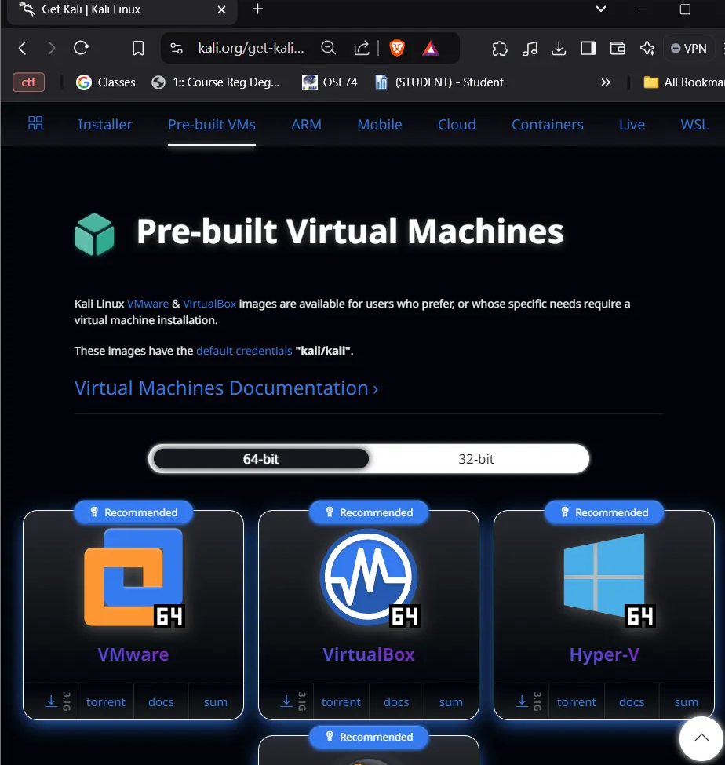
Download the VMware one, just click the download (arrow) symbol
3. Go to the Download Folder (C:\Users\UserName\Downloads)
*Make the Kali folder at the C:*
Move the file (kali-linux-2024.3-vmware-amd64) to the C:\Kali
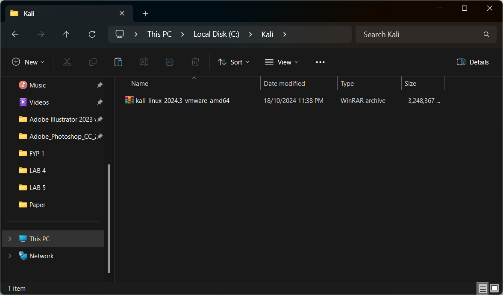
Click the file with Mouse right, and then select WinRAR > Extract to “kali-linux”.
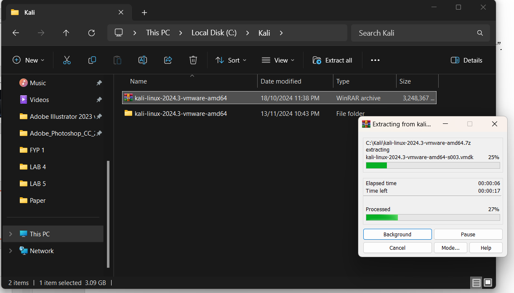
4. Download VMware Workstation. First, visit the following Google Drive link
Google Drive Link : VMware Workstation
Download -> New tab will appear -> Download anyway
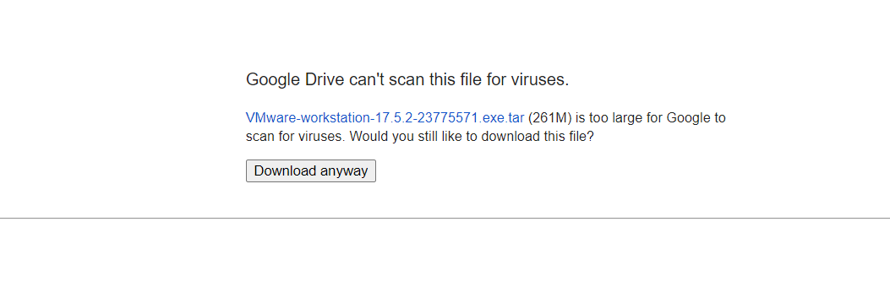
5. Install VMWare Workstation Player
Extract The Downloaded VMWare File & Install Right click > WinRAR > Extract to “ VMware-workstation”
**
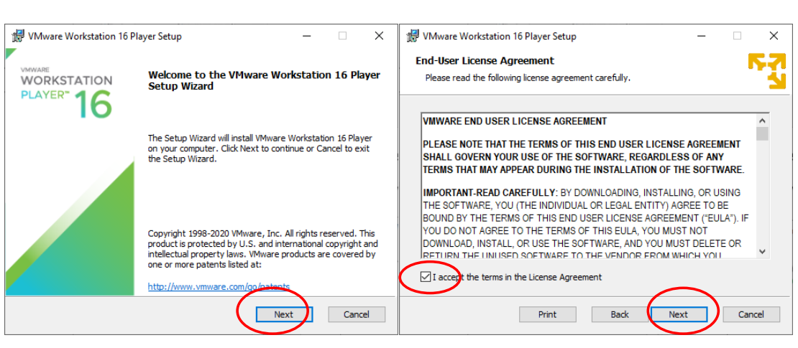
Click “Next,” tick the small checkbox, and click “Next” again.
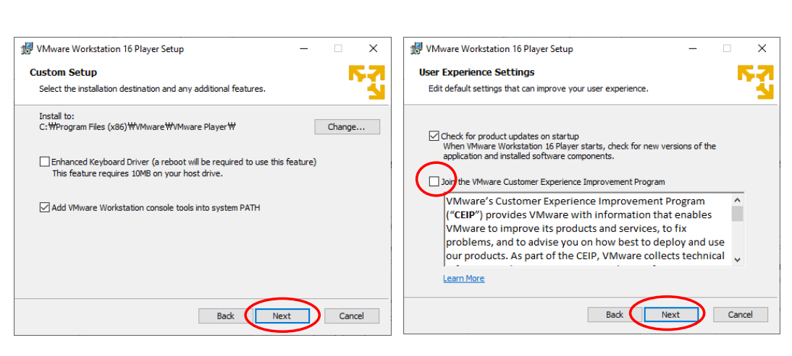
Tick the small checkbox, “Enhanced Keyboard Driver” and “Add WMware Workstation console” then click “Next” again.
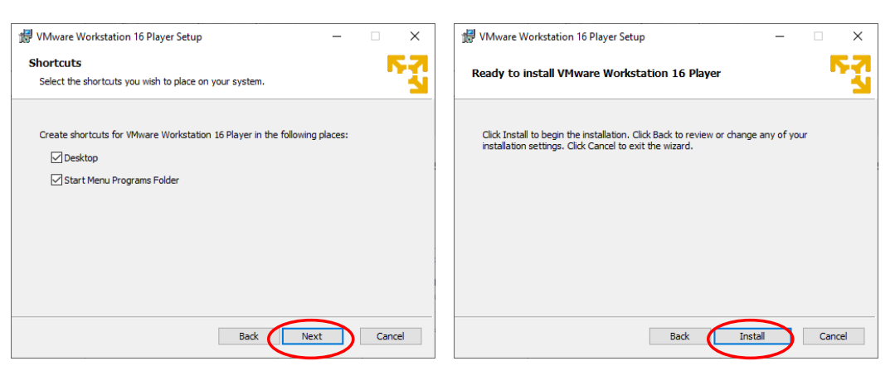
Click “Next,” , and click “Install”.
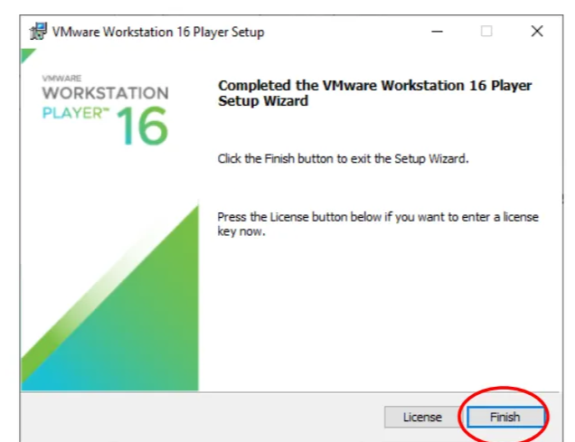
Click “Finish”.
6. Finish installing and setup the VMware
Click the VMware installer and just download as always. If it asking you to update you can ignore it first.
If you finish the VMware setup you should see this screen if VMware is open
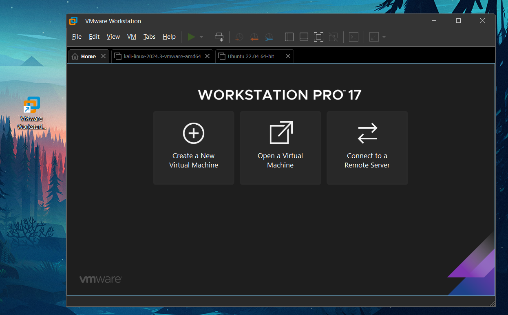
7. Import and Run Kali Linux VMWare vmdk file into the VMWare Workstation Player
Click Open a Virtual Machine > Open, then select the following file “C:\Kali\kali-linux-2024.3-vmware-amd64\kali-linux-2024.3-vmware-amd64.vmwarevm”
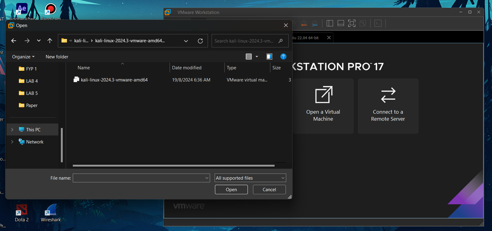
It will take some time to boot the kali inside the vmware. Just wait until its done. If the boot is done, you will see this screen.
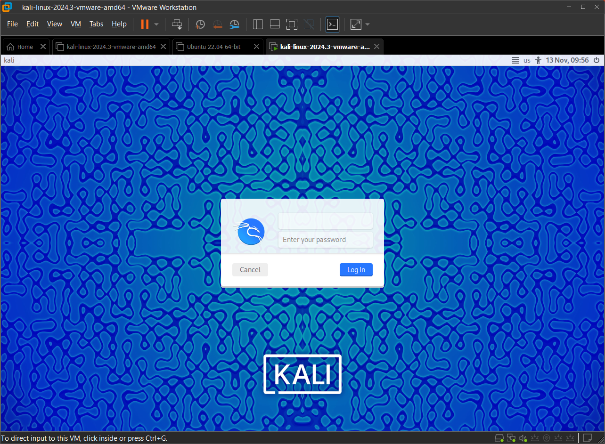
You can login using this credential :
Username : kali
Password : kali
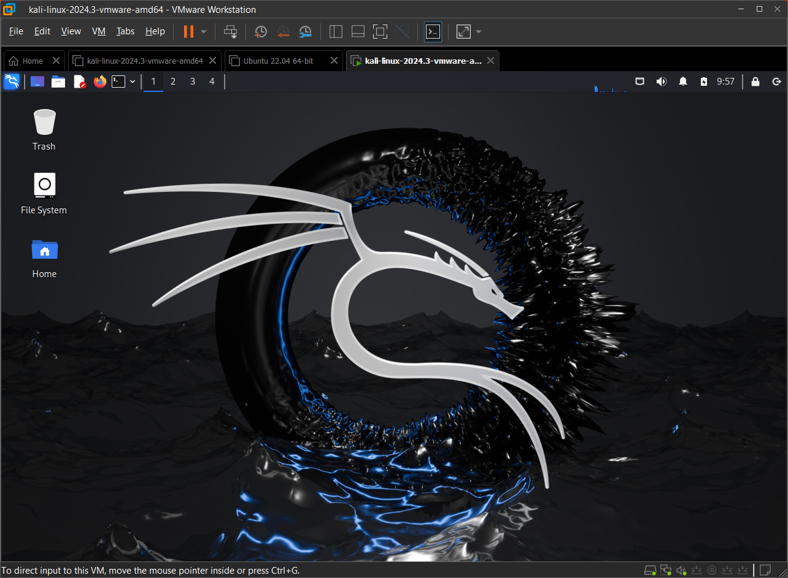
Congratulation mate!
Thats all! If you have any question do tell in the whatsapp yaaa, thank you!😍